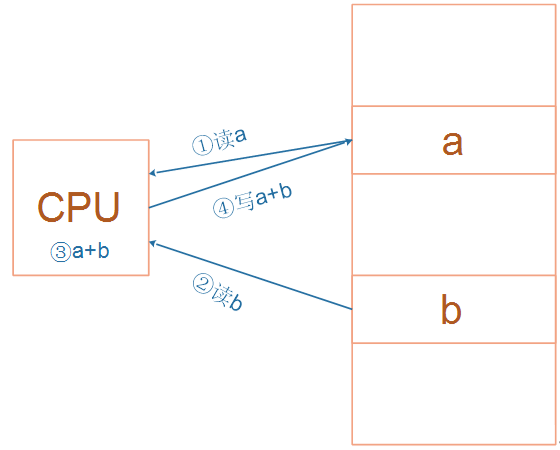
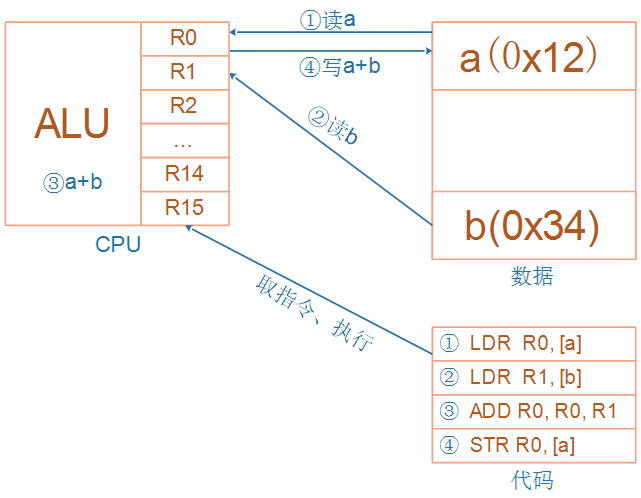
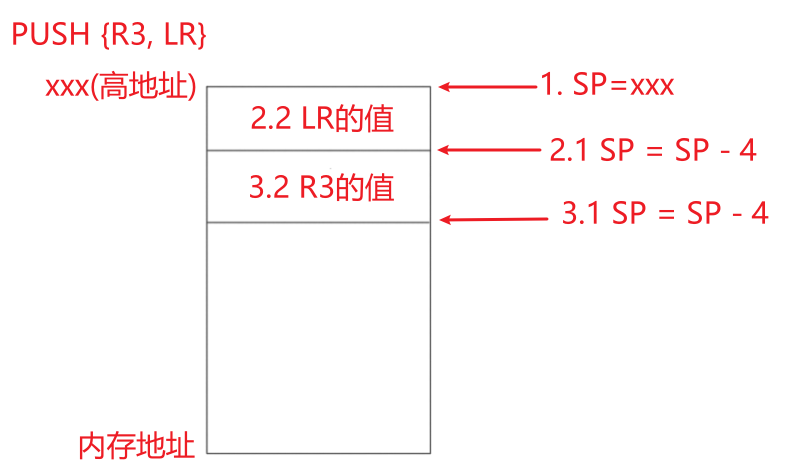
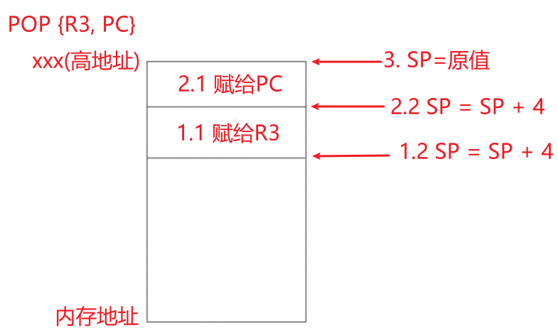
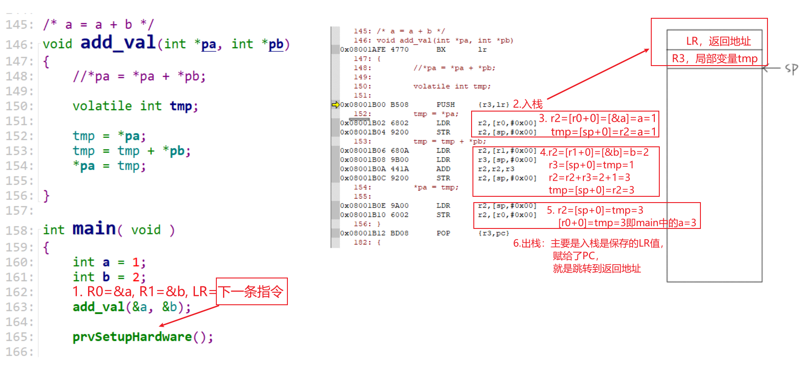
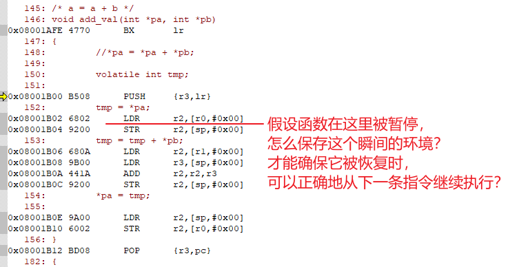
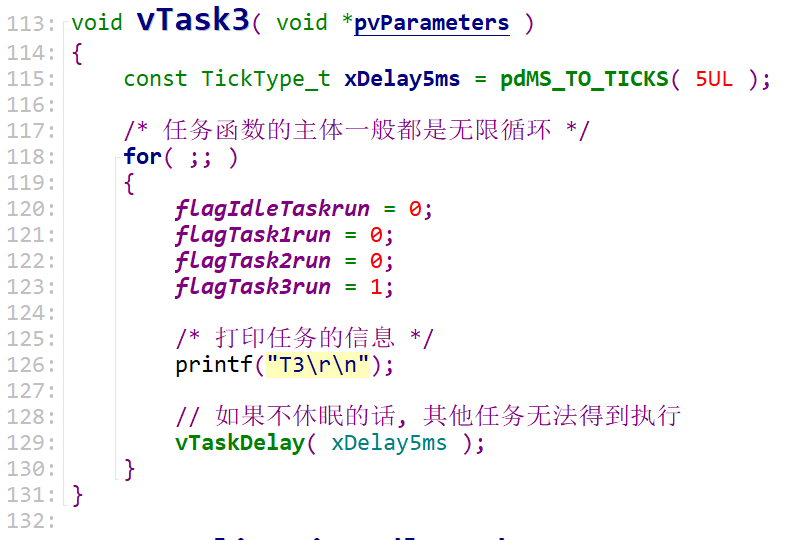

20211030直播_中度掌握FreeRTOS
1. RTOS的引入
1.1 用人来类比单片机程序和RTOS

妈妈要一边给小孩喂饭，一边加班跟同事微信交流，怎么办？
1.1.1 我无法一心多用
对于单线条的人，不能分心、不能同时做事，她只能这样做：
- 给小孩喂一口饭
- 瞄一眼电脑，有信息就去回复
- 再回来给小孩喂一口饭
- 如果小孩吃这口饭太慢，她回复同事的信息也就慢了，被同事催：你半天都不回我？
- 如果回复同事的信息要写一大堆，小孩就着急得大哭起来。
这种做法，在软件开发上就是一般的单片机开发，没有用操作系统。
1.2.2 我可以一心多用
对于眼明手快的人，她可以一心多用，她这样做：
- 左手拿勺子，给小孩喂饭
- 右手敲键盘，回复同事
- 两不耽误，小孩“以为”妈妈在专心喂饭，同事“以为”她在专心聊天
- 但是脑子只有一个啊，虽然说“一心多用”，但是谁能同时思考两件事？
- 只是她反应快，上一秒钟在考虑夹哪个菜给小孩，下一秒钟考虑给同事回复什么信息
这种做法，在软件开发上就是使用操作系统，在单片机里叫做使用RTOS。
RTOS的意思是：Real-time operating system，实时操作系统。
我们使用的Windows也是操作系统，被称为通用操作系统。使用Windows时，我们经常碰到程序卡死、停顿的现象，日常生活中这可以忍受。
但是在电梯系统中，你按住开门键时如果没有即刻反应，即使只是慢个1秒，也会夹住人。
在专用的电子设备中，“实时性”很重要。
1.2 程序简单示例
// 经典单片机程序
void main()
{
while (1)
{
喂一口饭();
回一个信息();
}
}
------------------------------------------------------
// RTOS程序
喂饭()
{
while (1)
{
喂一口饭();
}
}
回信息()
{
while (1)
{
回一个信息();
}
}
void main()
{
create_task(喂饭);
create_task(回信息);
start_scheduler();
while (1)
{
sleep();
}
}

2. 任务的引入
2.1 任务是什么
从这个角度想：函数被暂停时，我们怎么保存它、保存什么？怎么恢复它、恢复什么？
- 任务是一个函数吗？
- 函数保存在Flash上
- Flash上的函数无需再次保存
- 所以：任务不仅仅是函数
- 任务时变量吗？
- 单纯通过变量无法做事
- 所以：任务不仅仅是变量
- 任务时一个运行中的函数
- 运行中：可以曾经运行，现在暂停了，但是未退出
- 怎么描述一个运行中的函数
- 假设在某一个瞬间时间停止，你怎么记录这个运行中的函数
- 要立即任务的本质，需要理解ARM架构、汇编
2.2 理解C函数的内部机制
main函数的作用：
- 调用add_val
- 实现：a = a + b
分析add_val函数的内部实现，可以理解C函数的内部机制。
/* a = a + b */
void add_val(int *pa, int *pb)
{
//*pa = *pa + *pb;
volatile int tmp;
tmp = *pa;
tmp = tmp + *pb;
*pa = tmp;
}
int main( void )
{
int a = 1;
int b = 2;
add_val(&a, &b);
return 0;
}
2.2.1 ARM架构
ARM芯片属于精简指令集计算机(RISC：Reduced Instruction Set Computing)，它所用的指令比较简单，有如下特点：
- 对内存只有读、写指令
- 对于数据的运算是在CPU内部实现
- 使用RISC指令的CPU复杂度小一点，易于设计
比如对于a=a+b这样的算式，需要经过下面4个步骤才可以实现：

细看这几个步骤，有些疑问：
- 读a，那么a的值读出来后保存在CPU里面哪里？
- 读b，那么b的值读出来后保存在CPU里面哪里？
- a+b的结果又保存在哪里？
我们需要深入ARM处理器的内部。简单概括如下，我们先忽略各种CPU模式(系统模式、用户模式等等)。

CPU运行时，先去Flash上取得指令，再执行指令：
- 把内存a的值读入CPU寄存器R0
- 把内存b的值读入CPU寄存器R1
- 把R0、R1累加，存入R0
- 把R0的值写入内存a
怎么理解Flash上的指令？看下一节。
2.2.2 汇编指令
本直播只需要记住5条汇编指令：
- 读内存：Load，LDR
- 写内存：Store，STR
- 加法：ADD
- 入栈：PUSH，实质上就是写内存STR
- 出栈：POP，实质上就是读内存LDR
要读内存：读内存哪个地址？读到的数据保存在哪里？读多少字节？
- LDR R0, [R1, #0x00]
- 源地址：R1+0x00，注意：不是读R1，是把R1的值当做内存的地址
- 目的：R0，CPU的寄存器
- 长度：4字节，LDR指令就是读4字节，LDRH是读2字节，LDRB是读1字节
要写内存：写内存哪个地址？从哪里得到数据？写多少字节？
- STR R0, [R1, #0x00]
- 目的地址：R1+0x00，注意：不是写R1，是把R1的值当做内存的地址
- 源：R0，CPU的寄存器
- 长度：4字节，STR指令就是读4字节，STRH是读2字节，STRB是读1字节
入栈：把CPU的寄存器的值，写到内存上
-
PUSH {R3, LR}
-
源：CPU的寄存器R3、LR的值
- 目的：内存，内存哪里？使用CPU的SP寄存器指定内存地址
- 长度：大括号里所有寄存器的数据长度，每个寄存器4字节
- 注意：低编号的寄存器，保存在内存的低地址处
- 执行结果如下

出栈：把内存中的数值，写到CPU的寄存器
- POP {R3, PC}
- 源：内存，内存哪里？使用CPU的SP寄存器指定内存地址
- 目的：CPU的寄存器R3、PC的值
- 长度：大括号里所有寄存器的数据长度，每个寄存器4字节
- 注意：内存的低地址处的数据，写到CPU低编号的寄存器
- 执行结果如下

其他知识：
- CPU内部有R0、R1、……、R15共16个寄存器
- 某些寄存器有特殊作用
- R13，别名SP，栈寄存器，保存着栈的地址
- R14，别名LR，返回地址，保存着函数的返回地址
- R15，别名PC，程序计数器，也就是当期程序运行到哪了
2.2.3 运行流程分析

2.3 怎么保存函数的现场

2.3.1 要保存什么
-
程序运行到了哪里？PC寄存器的值
-
R2的值：我辛辛苦苦从内存里读到的值放在R2里，函数继续运行时，R2的值不要被破坏了
-
只需要保存R2吗？切换任务的话，所有的寄存器都要保存
-
保存在哪里？内存里! 内存哪里？栈里！
2.3.2 保存现场的几种场景
-
函数调用
-
中断处理
-
任务切换
3. FreeRTOS中怎么创建任务
3.1 所需参数
3.2 参数详解
- 分配了TCB结构体
- 分配了栈
- 在栈里写入了函数地址、参数
4. 调度机制概述
4.1 优先级与状态
- 优先级不同
- 高优先级的任务，优先执行，可以抢占低优先级的任务
- 高优先级的任务不停止，低优先级的任务永远无法执行
- 同等优先级的任务，轮流执行：时间片轮转
- 状态
- 运行态：running
- 就绪态：ready
- 阻塞：blocked，等待某件事(时间、事件)
- 暂停：suspend，休息去了
- 怎么管理？
- 怎么取出要运行的任务？
- 找到最高优先级的运行态、就绪态任务，运行它
- 如果大家平级，轮流执行：排队，链表前面的先运行，运行1个tick后乖乖地去链表尾部排队
4.2 调度方法
- 谁进行调度？
- TICK中断！
4.3 状态切换

5. 通过链表深入理解调度机制
-
可抢占：高优先级的任务先运行
-
时间片轮转：同优先级的任务轮流执行
-
空闲任务礼让：如果有同是优先级0的其他就绪任务，空闲任务主动放弃一次运行机会